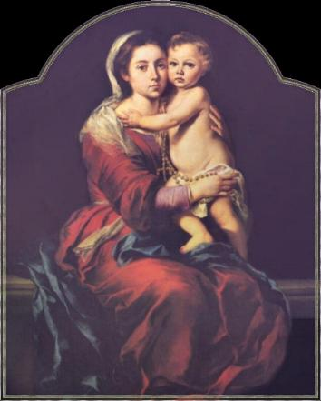
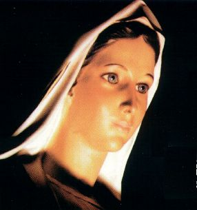
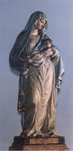

s'appelaient Joachin et Anne.
s'appelaient Joachin et Anne.
ENFANCE ET JEUNESSE
 - L'�criture Sacr�e n'informe pas, mais par
Tradition nous savons que les parents de MARIE de Nazareth
s'appelaient Joachin et Anne.
- L'�criture Sacr�e n'informe pas, mais par
Tradition nous savons que les parents de MARIE de Nazareth
s'appelaient Joachin et Anne.
Pour confirmer, l'�glise comm�more le 26 de juillet, la solennit� religieuse de "Grands-parents" de J�SUS, depuis 1584.
NOTRE DAME est n�e pure et sans tache, libre des effets du p�ch� original et exub�rante de gr�ces pour Le Tout-Puissant, par le m�rite d'�tre la M�RE du SEIGNEUR. Le fait probablement s'est pass� dans l'ann�e 732 de la fondation de la ville de Rome, si nous acceptons que J�SUS soit n� dans l'ann�e 748, d'accord avec les calculs �labor�s par les sp�cialistes. Aussi dans ce cas serait confirm� que la VIERGE MARIE avait 16 ans quand ELLE a donn� � la lumi�re au R�DEMPTEUR dans la Grotte de Bethl�em.

L'ANNIVERSAIRE DE MARIE
 - L'�glise c�l�bre la Nativit� de la M�RE DE DIEU dans le 8 de septembre,
mais toutefois notre M�RE TRES SAINT, pendant les Apparitions de Medjugorje (juin
de 1981), a inform� aux voyants qu'Elle est n�e le 5 ao�t.
- L'�glise c�l�bre la Nativit� de la M�RE DE DIEU dans le 8 de septembre,
mais toutefois notre M�RE TRES SAINT, pendant les Apparitions de Medjugorje (juin
de 1981), a inform� aux voyants qu'Elle est n�e le 5 ao�t.
Pour confirmer la date de l'Anniversaire de MARIE, existent deux faits que se sont pass�s en le m�me jour, lesquels collaborent d�une mani�re efficace et nous guident par accepter la date 5 de ao�t avec absolue conviction, vu que les "co�ncidences" existent, mais sans doute, ils sont travaux de la Providence Divine.
Le premier fait s'est pass� en ao�t
de l'ann�e 352, dans la ville de Rome, avec une chute de neige miraculeuse dans
la colline s�appel� Esquilin. Giovanni Patricio et sa femme ont r�v� que la
VIERGE MARIE voulait qu'une �glise ait �t� construite dans Son hommage et
"a inform�" que
marquerait la place couvre avec la neige. Dans le r�ve, NOTRE 
Le deuxi�me fait s'est pass� dans l'ann�e 431, quand par ordre du Pape C�lestin I (422-432), a �t� �tabli dans le Asie, le Concile d'Efs, parmi le jour 22 de juin au 31 de juillet. Dans ce Concile �cum�nique, il a �t� reconnu et proclam� officiellement le MATERNIT� DIVINE DE MARIE. Sa Saintet� a c�l�br� une Saint Messe dans Rome, "dans ce m�me jour 5 ao�t", o� il a lu le texte du Dogme de la MATERNIT� DIVINE DE NOTRE DAME.
Dans le pontifier de Pape Sixte III (432-440), successeur du Pape C�lestin I, il a �t� construit dans cette m�me place indiqu�e par le VIERGE MARIE, dans la colline Esquilin, dans Rome, autre temple dans honneur de NOTRE DAME, avec un solide et tr�s bien structures, beaux des colonnes joncs et trois magnifiques nefs (espace de l'entr�e jusqu'� le sanctuaire dans l'�glise). La vieille �glise qu�il a �t� construit par le Pape Lib�re a disparu dans le temps sans laisser le vestige. Le nouveau temple a �t� d�nomm� BASILIQUE DE SAINT MARIE MAGGIORE (Saint Marie, le plus Grand), en faisant r�f�rence � la grandeur des vertus et le immense pouvoir d'intercession de la M�RE DE DIEU. La Basilique a re�u beaucoup d'am�liorations au long des si�cles: des tableaux admirables, travail artistique avec or dans le plafond et dans les autels, �tage de c�ramique avec les dessins et des images sp�ciales, et des notables sculptures qui ont transform� le Temple dans une Basilique majestueuse, une des plus importants et plus jolies du monde. Annuellement l'hommage � NOTRE DAME sont renouvel�es dans le 5 ao�t avec tr�s beaucoup des r�ceptions et des c�l�brations, en se souvenant avec enthousiasme et ferveur des fid�les l'anniversaire de construction de la Basilique, un cadeau digne et pr�cieux de l'humanit� dans l'honneur et comme d�monstration de un vif amour pour NOTRE DAME, dans la date de SA Anniversaire.

SA enfance a �t� heureuse et calme, comme de tous les autres enfants entour�s par les affections et attentions de leurs parents et membres de la famille.
Quand ELLE a compl�t� trois ans d��ge, en accueillant avec attention aux pr�ceptes de la Loi des Juives, a �t� amen�e au Temple de J�rusalem pour �tre Pr�sent�e et Consacr�e � DIEU. La Loi mosa�que (Lev 27,1-6) d�terminait des obligations pour les enfants des deux sexes: ils devraient �tre Pr�sent�s, Consacr�s et Offerts � DIEU pour toute la vie, et les parents par racheter ses filles, devraient payer un tribut en grammes d'argent (le cycle de l'argent, monnaie du temps).
Les ann�es passaient et MARIE grandissait en gr�ce et beaut� et montrait un grand int�r�t pour les rouleaux de papyrus de l'�criture Sacr�e qu��taient gard� dans un bahut dans la maison que servait comme synagogue pour les r�unions hebdomadaires des juifs de Nazareth.
Quand ELLE a compl�t� 12 ans, c'�tait un temps de signification tr�s sp�cial pour les gar�ons et les jeunes filles de Isra�l, parce que selon les habitudes et la loi, les gar�ons atteignaient les droits civils et devenaient des citoyens Juifs, et les filles �taient consid�r�es "gedulah", l�galement autoris�es � se marier. Donc, en atteignant cet �ge, avec la protection de la loi, les contrats de mariage �taient �labor�s.
Alors, quand ELLE a compl�t� douze ans, s'est pass�e la premi�re manifestation r�solu de MARIE, selon l'id�al de SA vie. Ses parents ont parl� avec ELLE sur les formalit�s de la loi et le grand int�r�t des jeunes, qu�y compris, ils se manifestaient sur un possible mariage. Nous pouvons pr�sumer qu'ELLE a dit � ses parents, avec un grand respect et ob�issance, que SA projet de vie �tait orient� dans une autre direction, plus sublime et merveilleux, cependant le c�ur des ses parents voulaient une "alliance de mariage".

Par les papyrus sacr�s, vraiment MARIE a connu le CR�ATEUR et s�est passionn� pour LUI, pour la grandeur de l'indulgence Divine et la dimension incommensurable de la mis�ricorde du SEIGNEUR. ELLE �tait toujours en imaginant des manifestations Divines qu'ELLE avait lues dans les papyrus et son amour grandissait de plus en plus. Et de telle mani�re il s'est d�velopp�, que a occup� SA esprit et toutes les fibres de SA c�ur. ELLE a senti que avait besoin de plaire � DIEU dans chaque moment, et que, m�me dans les travaux journaliers et dans les plus petites et plus modestes occupations, ELLE les faisait avec int�r�t, z�le et perfection, parce qu'ELLE comprenait que tous SES actes faisaient partie du SA vivre quotidien et que se ELLE les ait fait avec plus d'attention et amour, indubitablement allait plaire beaucoup plus au SAINT P�RE. Et pour cela ainsi ELLE proc�dait!... MARIE, toujours essay� d'innover, en voulant d�couvrir une nouvelle fa�on, un geste plus significatif qu�ait montr� plus de d�licatesse et d'immensit� de SA amour, pour plaire encore plus au CR�ATEUR. Et en pensant ainsi, ELLE a id�alis� une fa�on de cultiver une vertu, que le a conduit � une d�cision s�rieuse et singuli�re, que �tait de maintenir SA virginit� comme la meilleure mani�re qu'ELLE a trouv�e pour plaire encore plus au SAINT P�RE �TERNEL.
Mais � cette �poque, les habitudes et la Loi Juive n'avaient pas prescrit la virginit�, cela simplement n'existait pas, parce que chaque femme devrait �tre �pous�e, avoir ses enfants et cr�er sa prog�niture. Alors cela attitude cristallisait le courage et l'expression la plus grande de la force de volont� d'une femme! ELLE a imagin� une fa�on plus pur et plus authentique de vouloir servir � DIEU et avec d�termination l'a mis en pratique, tranquille et sans peur. ELLE se hasardait d'�tre nargu�e par sa communaut�, d'�tre consid�r� punie par le SEIGNEUR, en ne se mariant pas et en n'ayant pas d'enfants. Dans l'interpr�tation des Juives du Vieux Testament, la femme qui n'avait pas d'enfants �tait consid�r�e d�shonor�e, c'�tait un fait ignominieux, jusqu�� m�me consid�r� comme une punition Divine. (Gn 30,23)(1 Sm 1,5-8)
Cependant, MARIE a pers�v�r� forte et inflexible, ferm�e dans SA r�solution et dans l�id�al secret que seulement ELLE et le SAINT P�RE savaient.

A APPARU JOSEPH
 - Il �tait charpentier et
fabriquait plusieurs ustensiles en bois: portes, fen�tres, charrettes, charrues,
etc. Joseph
- Il �tait charpentier et
fabriquait plusieurs ustensiles en bois: portes, fen�tres, charrettes, charrues,
etc. Joseph a vu MARIE et aussit�t sympathis� avec ELLE. Il a eu
plus de courage de que les autres gar�ons et il s'est approch� de la famille de seigneur
Joachin pour �tablir l'amiti� avec lui et les autres membres, parce qu'il voulait
fr�quenter la maison o� vivait cette femme.
a vu MARIE et aussit�t sympathis� avec ELLE. Il a eu
plus de courage de que les autres gar�ons et il s'est approch� de la famille de seigneur
Joachin pour �tablir l'amiti� avec lui et les autres membres, parce qu'il voulait
fr�quenter la maison o� vivait cette femme.
Dans les occasions favorables, en �tant ensembles les deux jeunes, Joseph parlait de son travail, de ses plans, de ses projets futurs et aussi, il d�crivait des passages pittoresques que se sont pass�s avec son famille, afin de faire MARIE sourire et participer de son vie.
ELLE toujours r�serv�e, �coutait ses narrations avec politesse, mais ELLE essayait de sortir d�licatement, se bien que les sujets et les attentions de Joseph le causait beaucoup de distraction, cependant ELLE ne les stimulait pas. Seulement permettait que les choses se passassent entre eux comme de bons voisins dans le petit village de Nazareth.
Toutefois, les visites sont all�es chaque fois plus fr�quentes, en r�v�lant que l�int�r�t de Joseph par ELLE grandissait et il se devenait plus enthousiaste. Il �tait anim� et il ne cachait pas ses r�actions. MARIE, au contraire, �tait discr�te, entendait ses insinuations mais restait en silence. N�anmoins, en la continuit� des visites, l�entendement parmi les deux s'allongeait et se fortifiait, en donnant � MARIE la confiance pour raconter le grand secret de SA vie. Un jour, quand les deux jeunes parlaient de l'existence, ELLE a expliqu� � Joseph, que aimait de son compagnie et que aussi, avait une grande sympathie pour lui, mais ELLE r�ellement voulait que eux aient continu� comme de bons amis, parce que SA id�al �tait un autre. MARIE avait consacr� toute SA vie et SA virginit� � DIEU qui vraiment �tait SON grand amour et par QUI SON C�UR passionn�ment frappait fort avec le meilleur et plus grand z�le de SA �ME.
Joseph a rest� perplexe!... Il ne croyait pas qu�ait �t� en entendant ces mots... Comme touts les Juifs, il voulait se marier, avoir des enfants et construire ses descendants. Pour cette raison, il �tait admir� avec cette r�v�lation, il ne savait pas que dire, donc il a vu ses r�ves �tre d�molis par le force des mots de la femme qu'il aimait, comme de petits ch�teaux de sable dans la plage d�truit par l�action des vagues de la mer.

Avec le c�ur d�bord� de tendresse il est all� rencontrer MARIE... Il a fix� ses yeux sur ELLE et avec la conviction d'avoir fait le meilleur choix, il a propos� qu'il ferait aussi le vote de la chastet� perp�tuelle s�ELLE se marie avec lui, pour les deux ensembles consacrer � DIEU leur puret� de la virginit�, leur travail et leur propre vie.
MARIE a accept� la proposition de Joseph. C'�tait la solution id�ale pour les deux. Parce que s'ils aient �t� mari�s ils pourront cultiver la chastet� sans que les autres personnes n�aient su et ainsi, ils cultiveraient unis, le singulier et le noble objectif par bonheur du couple et la d�monstration d'un profond et immense amour au CR�ATEUR.
En suivant les lois et l�habitude des Juive, le contrat du mariage a �t� fait, ils �taient fianc�s. Bient�t commenceraient les pr�parations pour la c�r�monie du Mariage et le bonheur d�j� avait occup� une dimension pr�cieuse dans le c�ur des deux.